Estimated time needed: 15 minutes
From now on, the hands-on labs for this course require an environment for working with a relational database. To get you up and running quickly we will do so on the Cloud, so you don't have to worry about downloading or installing anything, rather, simply access your database from your web browser. IBM Cloud provides a large number of Data and Analytics services, including IBM Db2, a next generation SQL database.

After completing this lab, you will be able to:
You will need an IBM Cloud account to do this lab. If you have not created one already, click on this link and follow the instructions to create an IBM Cloud account.
Now let us introduce you to Db2 on IBM Cloud. IBM Db2 is a next generation SQL database provisioned for you in the cloud. You can use Db2 on IBM Cloud just as you would use any database software (RDBMS), but without the overhead and expense of hardware setup or software installation and maintenance. Among the service plans offered for Db2 on IBM Cloud is the Lite plan, which is free to use. You can use your database instance to store relational data, analyze data using a built-in SQL editor, or by connecting your own apps.
Note that IBM Cloud also provides other variants of Db2 such as Db2 Hosted and Db2 Warehouse on Cloud, which is also referred to in this course. However, for the labs in this course, we will utilize the Db2 service since it comes with a Lite plan which is free to use.
Please follow the steps given below to provision an instance of Db2 on IBM Cloud.
Login to IBM Cloud
Select a location where you want the service to be hosted.
Note: Depending on the Country of your IBM Cloud account a location to deploy will be pre-selected. For example, if you are in the US, the default region will be Dallas. Users from the UK will see London and so on. It is best to go with the default location that is closest to you. Make sure a Region is selected as location, not a Data center.
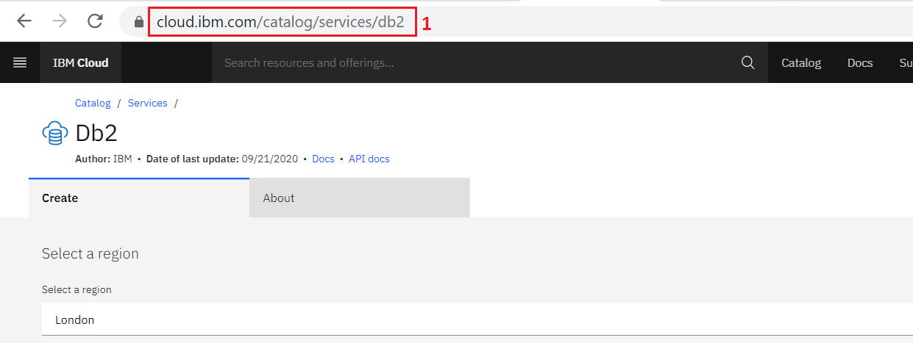
Scroll down to the Pricing Plans section and select the Lite plan (it’s a free plan, and available only in DALLAS at this point of time) or any other plans as required.
Then click on the Create button towards the lower-right of the page. It will spin for a few seconds (typically less than 30s) and then you should see a Service Created message indicating that your instance of Db2 was created successfully.
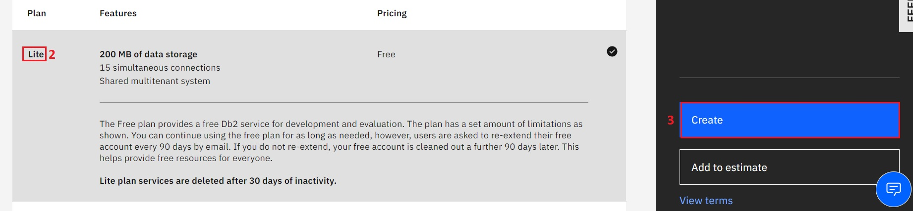
Now that you have created your database instance, you need to know how to get to it, explore the console and start working with it.
To access your database instance, go to your IBM Cloud Resource List (you may need to log into IBM Cloud in the process) directly at: cloud.ibm.com/resources
Alternative: Go to your IBM Cloud dashboard (you may need to login to IBM Cloud in the process) at: cloud.ibm.com and click Services.
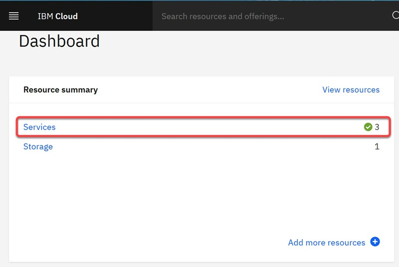
In the Resource list, expand the Services and locate and click on your instance of Db2 you provisioned in exercise 2 (the name typically starts with Db2-xx for example Db2-fk, Db2-50, etc.)
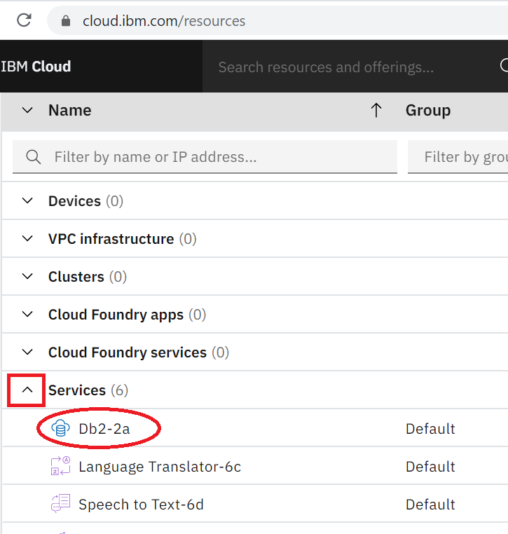
Click on the Go to UI button.
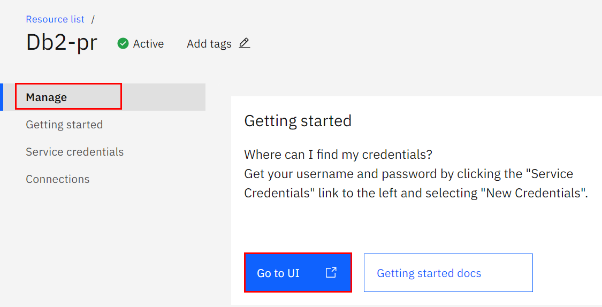
The Db2 console will open in a new tab in your web browser. Click on the 3-bar menu icon in the top left corner and then click on RUN SQL.
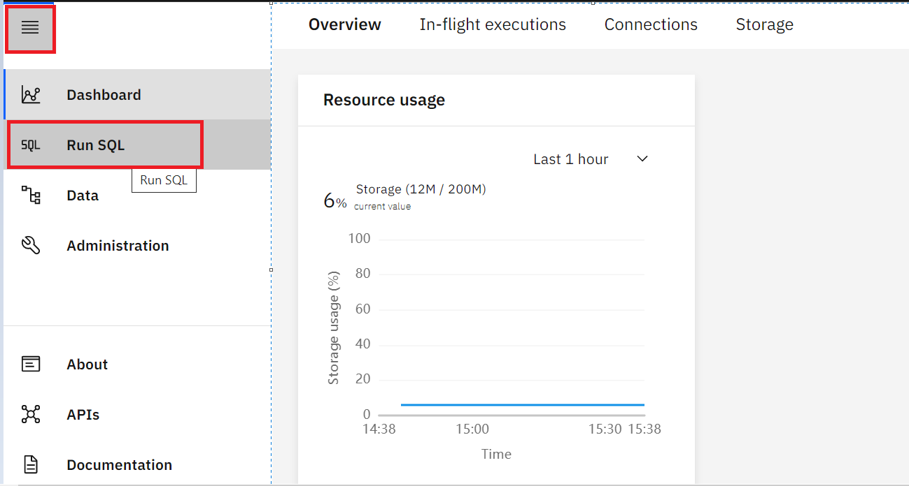
On the next screen click on Create new.
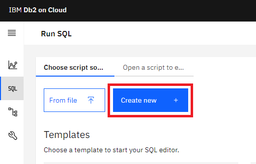
The SQL editor will open where you can start typing and running queries.
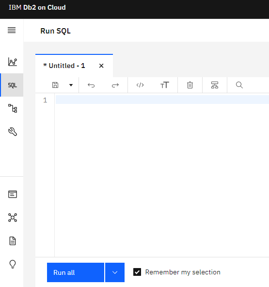
The SQL editor has several areas for performing different tasks.
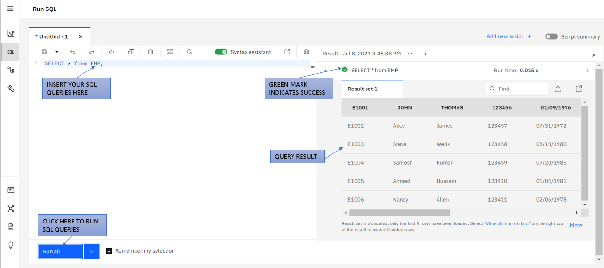
Click on the Add New Script + icon if you want to add a new script for composing queries and then select Create new.
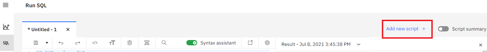
When you are asked in the upcoming labs, compose the appropriate SQL query for each problem and run by clicking Run all .
When you will run the script, looking at the Result section of the executed queries you will know whether the SQL statements ran successfully or not.
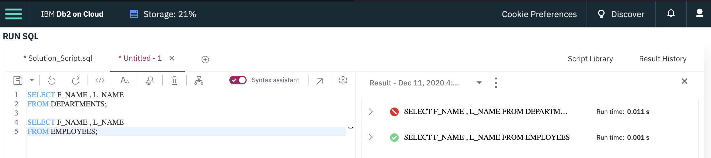
By clicking the Result section of the executed queries, you can see the query error details or result set to check and ensure the output is what you expected.
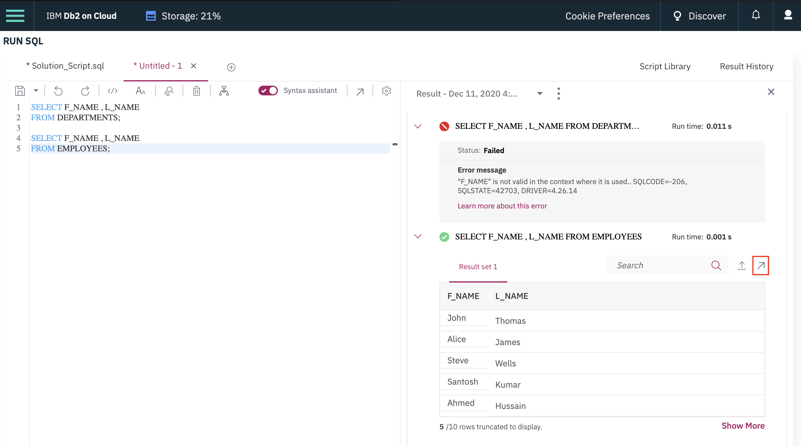
You can now find your way into and around the database instance, and you will use these skills in later labs.
| Date | Version | Changed by | Change Description |
|---|---|---|---|
| 11-05-2022 | 2.4 | Hema | Updated instruction |
| 28-04-2022 | 2.3 | Hema | Updated screenshots |
| 08-07-2021 | 2.2 | Malika | Updated screenshots |
| 23-12-2020 | 2.1 | Steve Ryan | ID Review |
| 07-12-2020 | 2.0 | Sandip Saha Joy | Created revised version from DB0201EN |
| 06-03-2020 | 1.0 | Rav Ahuja | Created initial version |